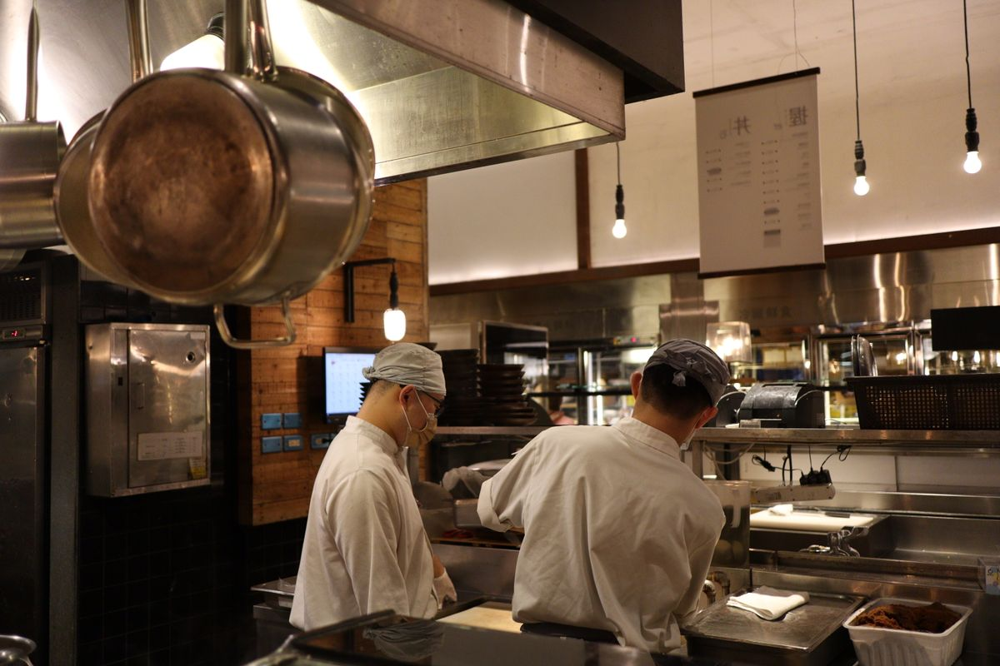

Every Saturday brunch, somebody asks me the same question at the carvery: “How do you know how much to cook?” The honest answer is that we do not guess. We plan, we measure, and we cook in small batches all service long.

Prep meeting, 9 amIt starts with the bookings, not the menu
At 9 am our team sits down with three numbers: how many guests are booked, what the weather is doing, and what happened on the same day last year. A rainy Thursday means the garden patio sits empty and the indoor stations get busy. A sunny Sunday means grandparents, strollers and a brunch queue by 10:45.
From there we build a forecast for each of the six live stations. Our regulars are predictable in a lovely way: the Carvery is busiest in the first hour, the Dessert Studio peaks in the last, and the Wok & Noodles station never stops.
Small batches beat big trays
A buffet runs out when a tray empties and the next one is twenty minutes away. A buffet wastes food when a huge tray sits under a lamp until it is tired. Both problems have the same fix: cook less, more often.
The refill rule
Every station chef refills at one-third full, never at empty. The back kitchen keeps the next batch staged and ready, so a refill takes minutes rather than a full cook. For hot dishes we hold batches for a maximum of 45 minutes; after that they leave the line.
Cooking to order where it counts
Three of our stations cook to order: the Pasta & Risotto pan, the Wok & Noodles flame and the carved meats. Nothing is made in advance except the base sauces, which means no waste on the dishes guests love most.
“If a tray is empty, we planned badly. If a tray is full at closing, we also planned badly.”
Our six-step service plan
- Read the bookings. We check covers, group sizes and any early arrivals.
- Set station targets. Each station gets a portion forecast for the first, middle and last hour.
- Stage the back kitchen. Next batches are prepped, labelled and timed.
- Refill at one-third. Chefs watch the trays, not the clock.
- Taste at the pass. Marco or Elena Torres, our sous chef, tastes every refill before it goes out.
- Count at close. Whatever is left is weighed and written down, because tomorrow’s forecast depends on it.
What the numbers look like
Our planning sheet is simple. These are typical ratios we use for a busy weekend service; your own kitchen will differ, but the habit of writing them down is the point.
| Station | Peak hour | Batch cycle | Hold time |
|---|---|---|---|
| Carvery | First hour | Every 20 min | 45 min |
| Grill & Tandoor | Middle | Every 15 min | 30 min |
| Pasta & Risotto | Middle | To order | None |
| Garden Salads | Steady | Every 30 min | 60 min, chilled |
| Wok & Noodles | All service | To order | None |
| Dessert Studio | Last hour | Every 40 min | Until sold |
The days that break the forecast
Some days refuse to follow the sheet. A school holiday turns a quiet Tuesday lunch into a family hall at full tilt. A thunderstorm on a Friday can double the walk-ins in an hour. And Thanksgiving week brings groups of twenty who all want the carvery at the same moment.
What we do when the room fills up
We keep a flex plan for every service. Pasta, rice and roast vegetables can be scaled up quickly because the prep is already done, so those stations absorb a surprise rush. Delicate dishes, like the seafood and the soufflé-style desserts, are never scaled up in a panic; we would rather cook them fresh in small numbers than serve a tired version.
What we do when it is quiet
We cut batch sizes early, close the least-used trays and move the staff to the stations guests are actually visiting. A half-empty tray at 8 pm is not a sign of abundance; it is a sign we have stopped listening to the room.
Where the leftovers go
Even careful planning leaves a little behind. Safe, untouched surplus goes to our community kitchen, which has fed around 300 neighbours a week since 2020. Vegetable trimmings become stock, bread becomes crumbs and croutons, and what cannot be used goes to a local composting farm.
The result: the last guest through the door still finds a full carvery, and at the end of the night our bins are lighter than they were a year ago.
What you can steal for a party at home
Cook in two waves rather than one big push, keep the second wave warm, and put out half the food at the start. Your guests will not notice, and you will not be eating lasagne for a week.
Planning a bigger gathering? Our family and group packages take the guesswork out for you, and our team will gladly talk you through quantities when you book a table.
The same logic applies to drinks. We chill water and batch the house lemonade before service, then top up in smaller containers rather than wheeling out one heavy dispenser that sits and warms in the corner.
None of this is complicated, but it has to be written down and practised. A plan that lives in one chef's head is a plan that disappears on the first busy Saturday.